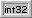

This means that the type
of data is unknown. This can appear for entire records when nothing about
the record is known, or for isolated areas of records where there are knowlege
gaps.
The editor used is a Hex editor, since the type of the data items is
unknown.
 This denotes a record for which
has multiple data members and at least some of the members are known. Clicking
on this will expand the tree to show the data members in the record.
This denotes a record for which
has multiple data members and at least some of the members are known. Clicking
on this will expand the tree to show the data members in the record.
This means a Boolean one or zero. I have found that BOOL types in AIR files are all 4 bytes, just as the ones in M$ C compilers. All of those extra bits are unused. Just click on the entry to toggle it between true and false.
An 8-bit signed integer. This is the same as a C language "char". It can range from -128 to 128. There are no decimal capabilities to integer types.
A 16-bit signed integer. Ranges from -32768 up to 32768.
 A 32-bit signed integer. Ranges from -2147483648 all the way up to 2147483647.
A 64-bit signed value that can contain a decimal place. This is the only raw data member yet found in an AIR file that has a decimal place.
The record contains text only.
Note that the text entered here has no effect on the flight or visual models.
It is for information only.
The following types use conversions to the data so that they can be displayed in real world numbers. Conversions are used in AirEd only when they are proven to be accurate. Decimal rounding to integers are treated properly. The values to the right of the decimal place are not just dropped.
Piston Engine Governed RPM. The raw data is stored as 1/4 RPM per unit, and the amount is the number over 1400. In other words, a zero in the raw data will give 1400 in the sim, while 2400 raw data works out to 2000 actual RPM (1400 plus 1/4 of 2400). A rather strange way of doing things! Once converted, the number presented in AirEd is the actual RPM, and valid numbers are from 1400 to 9591.
A 16 bit integer representation of an angle. The raw data is an int16, with 182 units=1 degree. The data is presented as degrees from -180.0 to 180.0.
Internally, the sim represents this data as a 16 bit unsigned (positive only) integer. In the AIR file, an int32 is used, with only the low 16 bits valid. The data is presented by AirEd as the real world mach number, which is found by dividing the raw data by 20,480. Since the raw data has a maximum of 65,535, the converted number has a maximum of 3.1999. Used in Mmo.
This is a simple conversion. 128 raw data units per knot of airspeed. Used in Vmo.
This type is stored in the AIR files as 256ths of a meter. For consistancy I convert the data so that it is shown in inches.
Another simple conversion. 16383=100%.
This one is somewhat an educated
guess. It was found by converting FSFS aircraft with easy values(100 and
10,000), and also by looking at many other planes with known good engine
performance. The conversion factor used is 13.671. Others have tried to
round this to the nearest houndred lbs thrust. I didn't, the data presented
is direct from the conversion.
This presents a graph of all
the data in the record. The data is treated as a series of int16 table
entries.
Each entry has a vertical grey line. The entry being edited is highlighted
by a blue line. The entry values are connected by straight red lines.
Editing is accomplished via the numpad and arrow keys. Be sure that
your Num Lock is on!
This presents a two dimensional
graph of the data. This is a special type of table that contains pairs
of data. Each pair contains an X extent and a Y extent. These are graphed
in the window and shown as text at the bottom. Editing is similar as the
TBL16 type above. Additionally, the numbers can be edited directly. To
edit the X extent(the only way), highlight the entry you want to edit and
press the X key. Same for the Y value, with the Y key.
NOTE: I have no idea what might result from editing the X values!
It may cause FS not to load the aircraft, malfunction, or even crash FS.
This is a three dimensional
data record, introduced in FS2k. Trying to represent this as a graph might
prove visually confusing, so it is instead done similar to a spreadsheet
table. This makes editing more familiar for most, and appears to be the
way the data is stored in the record. Note that the numbers of x and y
cells (with the same record identifier number) can vary by aircraft, so
if you are putting one of these records into a file to make a true FS2k
file, you may have to experiment to see which size one is correct for your
aircraft.
NOTE:It is now possible to edit the first row and column (shown
in grey). These describe the data points. Like editing the X values in
a tbldb, editing these might cause serious problems in the sim!